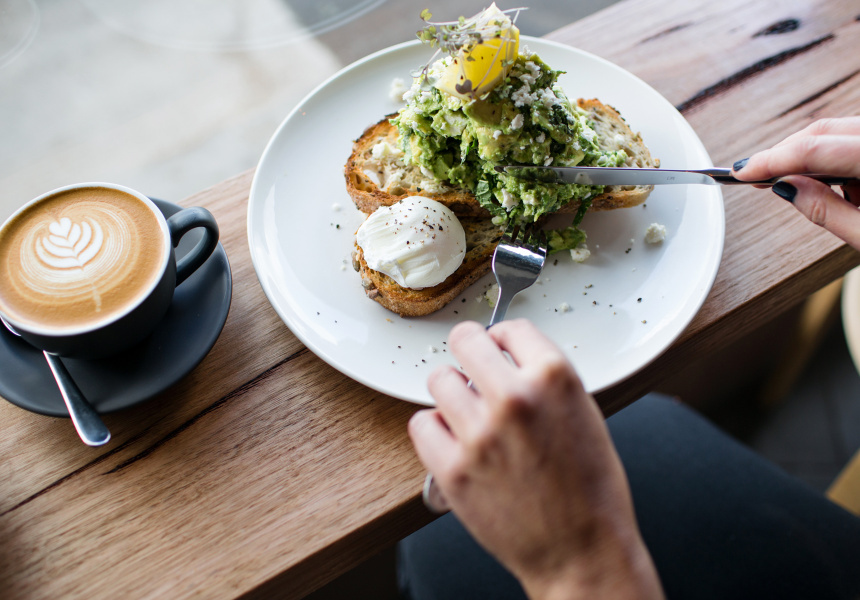
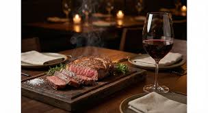
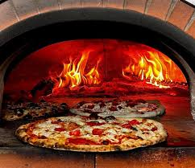
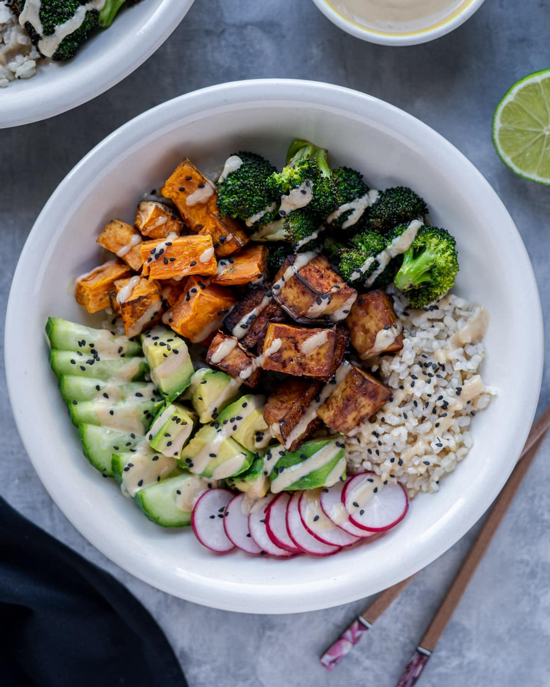
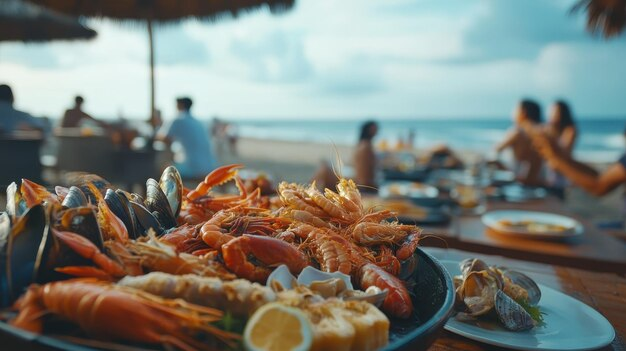
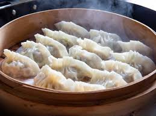

The Sunrise Plate
Cuisine Type: Breakfast & Brunch
Average Price: $30 per person
Deposit Amount: $10.00 per person
Signature Dishes:
- Smashed Avocado on Sourdough - $18.50
- Classic Eggs Benedict - $22.00
Description: Welcome to The Sunrise Plate, located right in the vibrant heart of the Melbourne CBD. We specialize in serving classic, hearty breakfast options designed to start your day perfectly. Our beautiful space offers a warm, welcoming atmosphere ideal for morning business meetings or relaxed family gatherings. Every dish is crafted using fresh, locally sourced Victorian ingredients.
Book This Restaurant

Yarra Fine Dining
Cuisine Type: Modern Australian
Average Price: $95 per person
Deposit Amount: $25.00 per person
Signature Dishes:
- Pan-Seared Duck Breast - $45.00
- MBS4+ Wagyu Beef Sirloin - $55.00
Description: Yarra Fine Dining offers an exceptional premium culinary experience directly overlooking the scenic Yarra River in Southbank. Our establishment focuses on delivering contemporary Australian cuisine paired with world-class local wines. Featuring sophisticated decor and spectacular panoramic city views, it represents the ideal romantic backdrop for couples celebrating special milestones or professionals hosting upscale corporate dinners.
Book This Restaurant

Lygon Pizza Co.
Cuisine Type: Italian
Average Price: $38 per person
Deposit Amount: $15.00 per person
Signature Dishes:
- Margherita Verace Pizza - $24.00
- Homemade Fettuccine Carbonara - $26.50
Description: Situated in Carlton's iconic Little Italy district, Lygon Pizza Co. brings the authentic flavors of traditional wood-fired pizza directly to your table. Our family-owned restaurant prides itself on utilizing heritage recipes passed down through generations. Enjoy hand-stretched sourdough bases, vibrant homemade tomato sauces, and fresh mozzarella within a lively, energetic dining room that is absolutely perfect for large family dinners.
Book This Restaurant

Fitzroy Vegan Kitchen
Cuisine Type: Plant-based / Vegan
Average Price: $32 per person
Deposit Amount: $12.00 per person
Signature Dishes:
- Truffle Mushroom Risotto - $28.00
- Crispy Tofu Buddha Bowl - $22.50
Description: Nestled in the trendy streets of Fitzroy, our kitchen redefines modern plant-based dining with creative and innovative flavor combinations. We present an entirely vegan menu that satisfies both dedicated vegans and curious food enthusiasts alike. The cozy, bohemian-styled interior provides a highly relaxed atmosphere perfect for casual catch-ups, university students, and green-living advocates looking for high-quality sustainable food.
Book This Restaurant

St Kilda Seafood
Cuisine Type: Seafood
Average Price: $55 per person
Deposit Amount: $20.00 per person
Signature Dishes:
- Catch of the Day Platter - $65.00
- Salt & Pepper Calamari - $24.00
Description: St Kilda Seafood delivers the freshest local daily catches paired beautifully with unparalleled panoramic views of Port Phillip Bay. Positioned perfectly on the bustling foreshore, our spacious, sun-drenched restaurant provides a premium yet highly accessible dining option. It is an excellent choice for families enjoying a weekend out, tourists exploring coastal landmarks, or couples seeking a relaxed seaside dinner experience.
Book This Restaurant

Chinatown Dumplings
Cuisine Type: Chinese
Average Price: $28 per person
Deposit Amount: $10.00 per person
Signature Dishes:
- Signature Pork Xiao Long Bao - $16.80
- Spicy Hand-Pulled Beef Noodles - $19.50
Description: Located within Melbourne's historic Chinatown precinct in the CBD, this vibrant late-night hotspot is renowned for serving the finest, most authentic handmade soup dumplings in town. Watch our master chefs stretch dough through our open kitchen viewing screen. Offering quick service, incredible value, and large portions, it stands out as a top favorite destination for busy city professionals, hungry students, and late-night explorers.
Book This Restaurant